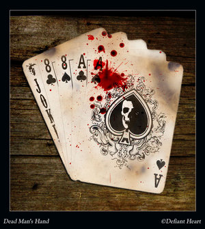

Forums galactiques > Assemblée Galactique : diplomatie officielle > Présentations
Pages : 1 2 ... 28 29 30 31 32
| dark devil Respect diplomatique : -21  14/06 ETU 12:36 | Score : 0 Détails je souhait la bienvenue à tous les jeunes commandants d'origine !
et pour ceux qu'il je souhait avoir une aide peuvent aller dans le Marché galactique => de l'argent = 1 clique ! ou Dons de iwok je pense qu'il ne m'en voudra pas de faire de la pub | ||
| Wensicia Corrino Respect diplomatique : 1642  14/06 ETU 17:41 | Score : 3 Détails Je cite le précédent "boulet" :
"Description Squellette mort par un denomé"vulcurax" et maintenant ce squellette est de retour sous le nom de"mortox"pour ce venger de ça mort. Avant il avait un tres grand empire:ORIGINE et ESPERANCE mais a ça mort il fut jeté dans la galaxie des exilé pour que sont corps ce fasse bouffer par ces chiens. Maintenant il est de retour dans la galaxie:ORIGINE pour un ultime combat,une ultime vengeance!!! Mortox... Respect diplomatique -2 Réputation à la taverne 0 Renommée de marchand 0 Ce commandant ne fait plus partie de la galaxie. Dernière apparition : 14/06 ETU 17:35" ... La connerie n'a plus de limite ... | ||
| Thomert Respect diplomatique : 8  14/06 ETU 20:03 | Score : 0 Détails Si je puis vous corigez, présidente, il n'a pas -2 mais -9 de respect diplomatique et cela ne va pas cécer de descendre je le pense, et je le souhaite.
Toutes mes distinctions cher Présidente avec un grand comme vous le méritez. Le commandant Thomert. | ||
| dark devil Respect diplomatique : -21 14/06 ETU 20:24 | Score : 1 Détails Si je puis vous corrigez,le boulet présent n'est pas moi mais vu que le message c'est retrouver dans la poubelle la sa fait que vous me traiter de boulet encore et parle de chose que je ne connait (d'un passer inconnu et d'un avatar qu'il n'est pas le miens )
pour éviter la confusion vous les vous vous expliquerez en tournent les phrase différemment merci | ||
| Thomert Respect diplomatique : 8 14/06 ETU 20:50 | Score : 2 Détails Désolé commandant dark devil je ne parlais point de vous mais je parlais du commandant Mortox.
Je pense que vous aviez compris mais vous vouliez que l'on tournent notre preuve pour les commandants qui tomberairent dessus. Salutation. | ||
| Erco Colson Respect diplomatique : 55  16/06 ETU 16:37 | Score : 11 Détails L'un des nombreux projecteurs holographiques grésille. L'image d'un homme en tenue d'Officier de la Flotte apparait, instable et entrecoupée de parasites.
-Commandants d'Origine Je suis le Bashar Erco Colson, originaire de la planète Proculis en Galaxie des Exilés. Une anomalie dans l'hypergeodésique subspatiale durant notre dernier trajet m'a conduit ici,en Origine, avec mon équipage. Etant le plus haut gradé, j'ai le commandement de la base planétaire (bientôt) établie à la Périphérie Galactique et ai pour responsabilité de représenter Proculis dans cette Galaxie. Nous sommes une Nation composée majoritairement de scientifiques, et poursuivons un idéal démocratique -dont le caractère asymptotique est hélas de plus en plus marqué ces derniers temps... Quiqu'il en soit, les avaries de notre vaisseau étant importantes, nous profiterons de ce séjour pour en apprendre le plus possible sur Origine. C'est pourquoi je conclus en faisant appel à votre bonne volonté: serait-il possible d'obtenir un récapitulatif par Xcom des évènements politiques récents? Je vous remercie d'avance. Mes respects La liaison s'interrompt dans une quasi indifférence, à l'instar du reste du message. Salut à tous, j'ai eu envie de venir voir si la g0 était différente de la g1... s'il y a d'autres transfuges Exilés, je suis connu là bas sous le nom d'Acanith. Bon jeu! | ||
| balafre Respect diplomatique : 7  17/06 ETU 00:55 | Score : 7 Détails Un enfant très intimidé avança au-devant de l'assemblé. Il était chétif et pâle, on lui aurait donné 8 ans tout au plus. Lorsqu'il arriva au pupitre, il eut beaucoup de mal à se faire entendre. Mais après plusieurs essais non concluants, il prit la parole d'un ton fort mais mal assuré...
Bonjour à tous; Mon nom est Albert de rochebrune, mais tout le monde me surnomme balafre. Comme vous pouvez le constater, je suis très jeune pour être commandant. Cependant, la tradition de mon royaume l'ordonne. En effet, je suis l'aîné de la famille royale et mon père est décédé prématurément, probablement empoisonné. Mais je ne souhaite pas m'étendre sur ce sujet... À ces paroles, il eut, l'espace d'une seconde, un regard haineux. Les quelques commandants qui l'écoutaient en furent troublés, mais il se reprit vite, et continua Je vous demande donc d'être indulgent à mon égard, je ferais mon possible pour apprendre vite et bien. Avec votre aide, je suis certain que j'y parviendrais ! Merci à tous pour votre attention Et il repartit d'un pas précipité | ||
| Général De Guerre Respect diplomatique : 4  17/06 ETU 10:28 | Score : 5 Détails Dans les couloirs de l'Assemblé Galactique on entendait :
Une , deux , trois , quatres. Une , deux , trois , quatres. Et d'un coup on entendit : Garde a vous ! A se moment plus un bruit et une personne marchait dans la direction de la salle de présentation et commença un discours : Chers citoyens d’Origine bonjour. Je me présente je suis Général de Guerre. Merci a vous de ma cueillir dans votre galaxie. l’Homme repartis avec ses hommes sans décroché un mot. | ||
| Cristale Respect diplomatique : 5 19/06 ETU 14:46 | Score : 5 Détails Grande grande fut la puissance
Courte courte fut l'existence Du petit royaume de la décadence De ses armées innombrables il conquit Toutes les planètes dont il s'éprit Grand grand fut le désespoir De ceux qui virent ses promesses en faite illusoires Rien rien ne fut oublié Tout tout fut refoulé Jusqu'au grand soir Sourdes sourdes furent les explosions Nombreuses nombreuses furent les détonations Courtes courtes furent les exclamations De ceux qui demandaient une protection Longue longue fut la bataille Tant tant de gens Sur le marbre répandaient leur sang Le roi sur son trône s'abattit La couronne de sa tête tombit Et sur le pavé rougit rebondit Loin loin fut transmit l'écho De l'avènement d'un royaume nouveau Grosse grosse fut la foule Qui dans les rues s'écoule Pour écouter la paroles des héros Trois jours et trois nuits furent nécessaires Pour des autres citées rencontrées les intermédiaires Et à l'aube du quatrième jour Le Royaume de l'Arc-en-Ciel put dire bonjour Au soleil levant Si grande fut la victoire Que la voix du peuple Tomba dans les oreilles des étoiles Qui pour fêter notre gloire Nous transmirent une lumière éclatante | ||
| Arky Fyre Respect diplomatique : 24  19/06 ETU 15:01 | Score : 3 Détails " Arky s'avança légéremment, l'air asuré, l'oeil vif.
Il avait l'air sur de lui, il voulea faire paraitre cette image, d'un homme sur de lui, capable de gouverner. Il regarda les commadants présent dans l'hémicycle, et leur adressa un signe de la tête... " - Commandants, commandantes, Bonjour, je me nomme Arky, digne représentant du peuple Arlay. Je me dois de me présenter, j'ai été élevé dans une famille modeste, j'ai pris le pouvoir par un coup d'état qui frappa la tyrannie anciennement en place. Cela fait à présent un mois que je fais de mon mieux pour diriger mon peuple... " Mince! se dit il au fond de lui. je devais paraitre sur de moi! C'est loupé. Je fais de mon mieux... Quel idiot! pourquoi j'ai dis ça! Ils vont maintenant croire que je ne sais le gouverner... Tampis, aprés tout, je me fou de leur opinion, je fais du mieux que je peux... Finalement, je me débrouille pas si mal." Sur ceux, je vous laisse, et vous souhaite une agréable journée! " Arky abrégea son discour,de peur de paraitre encore moins sur de lui... " | ||
| Inamor Sarec Respect diplomatique : -54  19/06 ETU 16:02 | Score : 11 Détails Un type en chemise l'air plutôt détendu entra dans l'Assemblée
"Bonjour tout le monde ! Je m'appelle Inamor Sarec et je suis le président de la planète Udéa. Oui, je sais, à 17 ans, c'est étonnant ! Mais c'est comme ça, chez nous la majorité est à 16 ans, et j'ai été élu à 17 ans, parce que mes idées plaisaient au peuple udéen. On commence tôt chez nous ! Sur Udéa, on accorde beaucoup au bonheur et à la détente. Même le travail est devenu une distraction, ainsi, on a erradiqué le chômage, tout le monde travaille dans la bonne humeur. On ne connait pas non plus la pauvreté chez nous, seul les gens qui ne travaillent pas sont pauvres, mais comme tout le monde aime travailler... Hé hé ! J'éspère être le bienvenu à l'Assemblée ! Au fait, en plus d'être président, je suis aussi un marchand de la Guilde. (comme quoi il est possible de faire plusieurs boulots en même temps ^^)" | ||
| Lasork le brave Respect diplomatique : 9 19/06 ETU 21:02 | Score : 5 Détails l'hologramme du jeune commandant Lasork fonctionna rapidement.
Une silhouette jeune et atlhétique , vétue d'une tenue moulante organique se matérialisa. Cette combinaison avait l'avantage d'offrir à son occupant une protection individuelle, lui permettant par exemple d'évouler sur n'importe quel monde, sans les contraintes physiologiques. Son visage remplit de sagesse enveloppé dans une capuche moulante révéllait une apparence juvénile. Il s'exprima en toute simplicité: << Salutations à tous les commandant(e)s de cette galaxie O. Ma présence, nouvelle ici n'est pas le hasard, c'est un commencement... Il m'est permis de partager avec vous un moment agréable fraternel, et au nom de mon peuple ainsi que de l'esprit planétaire nous nous réjouissons de ce moment échangé même holographiquement. Mon peuple pacifique vient de s'éveiller sur un monde harmonieux ou la méditation, la synchronisation avec le milieu vivant est chose bien accomplie. Tous chez nous est issue du viviant, les batiments, les technologies, les moyens télématiques. Nous sommes en relation permanente avec l'esprit planétaire. Nous puisons notre force vitale de celui ci. En échange, nous fisionnons avec lui lors de séances de méditation à la fois individuelles et collectives. Notre évolution passe naturellement vers une expansion pacifique et notre race voue un attachement considérable à la diplomatie. Nous respectons le vivant dals la mesure ou celui ci nous respecte. Nous sommes prêts à sacrifier nos enveloppes de manifestations pour une juste cause. Nous servons la Lumière, la Liberté et nous ne craignons pas car nous avons la connaissance de l'immortalité de nos âmes. Nous savons nous réincarnés collectivement. Nous avons coutumes de dire chez nous :"Vois à travers celui qui vient , le reflet de toi même à un moment donné ! Il est, a été, ou sera, ton miroir ! Ne t'attache pas à l'apparence des choses, des êtres, apprends à lire avec ton coeur, ressens avec ton âme ! Vois celui qui vient , le bien qu'il peut dégager au fond de lui même !" Notre Adn est activé avec une spirale de 16 chakkras. Mon peuple homogène est issu d'une race unique. Ce peuple m'a désigné comme ambassadeur du monde sirkien. avant d'être à ce poste, je fus nommé également chevalier confirmé de l'ordre sirkien de la Bravoure, voilà pourquoi je me nomme Lasork le brave. Je vous souhaite la prospérité la plénitude dans cvos incarnations !>> L'image holographique de Lasork s'estompa. fin de transmission sirkienne. | ||
| Alnia. Respect diplomatique : 867  19/06 ETU 22:43  | Score : 17 Détails Tiens, si on met tous ceux qui brassent de l'air dans un coin, et tous ceux qui nous pompent l'air dans un autre, ça nous fait une climatisation écologique !
Le Grand si vous continuez à pouffer comme vous le faites si bien en ce moment, je vais vous engager pour réguler la température au Palais déviant... Et au milieu d'un lac de lave, vous allez avoir du boulot... Et personnellement, j'aime très moyennement qu'on se foute de ma gueule... | ||
| Wolfenn Respect diplomatique : 2  20/06 ETU 15:56 | Score : 2 Détails Je suis Wolfenn, fils illégitime du roi elfe Glingurth et de son amante Glinmel. Mordu à l'âge de huit ans par le loup Shiranui (depuis devenu mon ami), j'ai désormais de drôles de tendances la nuit tombée.
C'est le commandant Shiranui et la commandande Azilisa Briana qui m'ont convaincu de venir dans la contrée d'Apocalypsis pour voir si je pouvais y trouver quelques innocentes victimes à déchiqueter. Aussi, quelques Leems ne seraient pas malvenus pour pouvoir commencer à forger une armée. Merci d'avance. Votre horriblissime déchicteur, Wolfenn. | ||
| Shiranui Respect diplomatique : 227  20/06 ETU 21:32 | Score : 1 Détails Loup de Sang déclara, s'adressant à Wolfenn :
Il est vrai que ce jour là j'ai peut-être mordu un peu fort... Et grâce à moi tu es devenu fort... Enfin tu l'étais, face aux humains... Oui car maintenant que tu erres dans nos contrées tu n'es pas plus puissant qu'un vers de terre, ta force de Loup ne te sera d'aucun secours... Et c'est pour cela que celui qui lèvera la main sur toi le paiera... Mais il te faudra t'entraîner pour égaler les plus grands... T'entraîner et commercer... | ||
| tagarte Respect diplomatique : 13  21/06 ETU 16:17 | Score : 2 Détails Un cabane en boit au fond du marche viens de se construire ……
Un homme de petite taille les cheveux gris de race humaine ouvre le rideau de fer de cette écope. « Mes dames,…..messieurs seigneurs de guerre, commandant, impératrice, chevalier, viking, armer prussienne, amateur de vidéo porno, je me pressente……….. Je suis TAGARTE J ouvre très bientôt mon humble magasin pour vous servir DES PRIX A TOUTE EPREUVE et au plus juste » Repris son souffle « Ici pas d arnaque des prix, du matériel de choix, des kamis de première main construit chez de véritable artisan qui on l amour de leur métier Mon équipe et moi-même somme a votre service 7\7, 24h\24h Et nous nous efforcerons d être au plus juste des prix de nos fournisseurs » TAGARTE sorti son portable « oui ? OUI !!!! OK, je leurs annonce » Le sourire aux lèvres « En accord avec mes collaborateurs je tien a vous annoncer que ….. Pour les 5 premier clients je margerai a 5% du prix fournisseur, Exemple : Kami à 14 000 prix fournisseur sera vendu 19 560 leem !! Oui vous avez bien entendu !!!Et ceci que pour mes 5 premiers clients (Condition de la vente uniquement sur MP !!!) « J espère vraiment une grande entente entre nous » Ps : je cherche une coa | ||
| Joker Respect diplomatique : -6  21/06 ETU 17:46 | Score : 5 Détails Une chose informe marcha dans les coulaoirs de l'assemblée. Elle s'arêta devant la salle où il y avait marqué "présentation". La chose entra et se devetit de son manteau...
- Hey !! Je suis Joker, l'as des As ! Grace aux jeux de carte, je me fais de l'oseille. Une paure ? Un brelan ? Une quinte ? Roayle ? pas de problème, je epux faire apparaître ou disparaître les cartes à volonté ! | ||
| baba Respect diplomatique : 22  22/06 ETU 18:33 | Score : 7 Détails Bien le bonjour commandants en tout genre,
Je me nomme Ponda Baba, Baba pour les intimes. J'arrive de la planète Ando, située dans le secteur Corélien. Pourquoi l'avoir quittée? Suite à un incident avec un chevalier.. En effet lors d'une joute avec Mimi,Feu ma tendre et douce,et sous l'effet de l'alcool de jus de Punta, je bousculais un chevalier qui, exécédé par mon comportement, me trancha le bras droit. Il voulu m'achever, mais je parvins à m'enfuir. Je dus quitter la planète car il me traquait sans relâche. J'ai donc abandonner mon métier de..hum.. Commerçant, pour tout recommencer ici. Sachez que je ne vis que dans un but, me reconstruire aussi bien socialement, que physiquement et ainsi me venger de ce chevalier.. Salutations de l'être déchu.. | ||
| Jon Snow Respect diplomatique : 17  23/06 ETU 00:44 | Score : 4 Détails Un jeune homme d'une vingtaine d'années pénétra dans la Salle.
La démarche souple, élancée et vigoureuse, il portait un costard décontracté blanc et une chemise bleue en soie, le col remontée. Visiblement un gars qui aime la classe. Il jeta son café vide dans une poubelle, gardant le batonnet en plastic à la bouche. Son visage encadrait deux grands yeux verts et une bouche assez large dont les lèvres dessinaient un sourire séducteur. Ses cheveux blonds, coiffés volontairement en bataille, témoignaient du temps qu'il devait passé chaque matin à prendre soin de sa personne. Il grimpa sur l'estrade et s'approcha du micro. Snow, Jon Snow. Je suis le Gouverneur des Etats Unis Galactiques, mandaté par le Président. Voici ma carte du parti. J'annonce aujourd'hui la future ouverture de notre ambassade à l'Assemblée. Je réapparaitrais dans les prochains jours pour l'inauguration du building. Merci de votre attention, vous êtes tous invité au pot d'inauguration demain dans la soirée. Jon Snow, à votre service pour la grandeur des E.U. Il exécuta un sobre salue militaire et sortit de la salle comme il était venu, la démarche tranquille, effectuant une besogne comme une autre. Les commandants le regardèrent, toujours surpris et perplexe de son intervention... | ||
| Anyanca Respect diplomatique : 6 23/06 ETU 12:30 | Score : 6 Détails Un vent assez glacial arriva dans la salle. Les portes s’ouvrirent en laissant passée trois étranges créatures assez petites, derrière eux on apercevait une grande silhouette, celle d’une femme, elle portait une longue cape noire et un capuchon sur la tête. Elle avança lentement dans la salle, derrière elle les deux créatures fermèrent les portes puis allèrent lui donner la main, la troisième se posta devant la jeune femme et puis pris la parole.
Bonjour à vous tous, je suis Perséphone et voici Rolandas et Mordrede. Nous sommes les accompagnateurs de mademoiselle Anyanca Filligane. Reine de Rose île, je parle à la place de notre majesté car selle si et très timide. La petite créature recula, les deux autres lâchèrent les mains de Anyanca. Celle si enleva tous doucement son capuchon et fit une révérence à l’assemblé. Puis d’une toute petite voie elle pris la parole a son tour. Comme la si bien dit Perséphone, je suis reine de Rose île depuis peu, je suis la dernière Filligane, toute ma famille et morte il y a peu de temps. Malgré que je n’est que 19 ans je dois prendre mais responsabilité et gouverné comme il le faut pour que le calme sois remis dans les patries. Je suis prête a aider ce qui en on besoin même si je n’ai pas beaucoup de pouvoir. Je n’y connais pas grand-chose mais je souhaite que la paix soit remise alors si il faut faire la guerre pour l’avoir, la guerre il y aura. On ma toujours appris a me méfier de tous et je confis ma confiance a peu de personnes, mais trois vassaux ici présent pourrons vous le confirmer. sur ce Rolandas pris la parole d’une assez forte voie. Avez-vous des questions à poser ? |
Pages : 1 2 ... 28 29 30 31 32
Forums galactiques > Assemblée Galactique : diplomatie officielle > Présentations